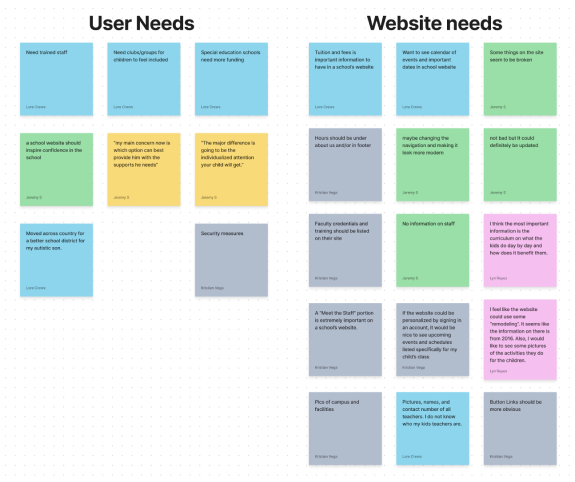
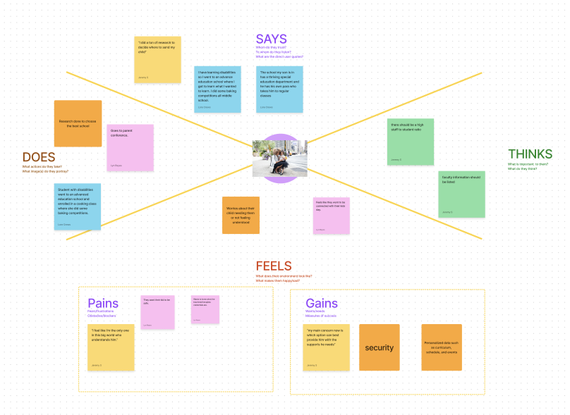
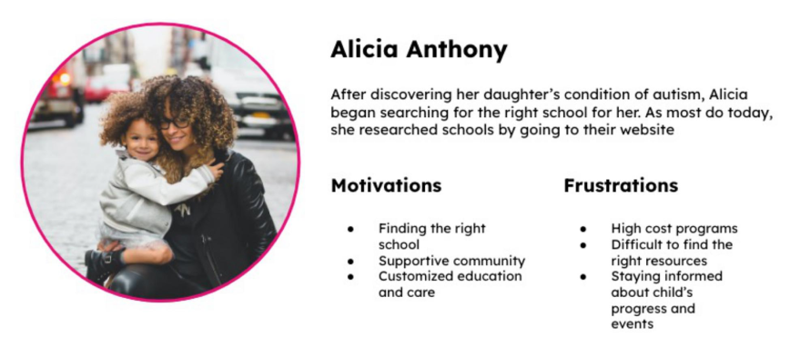
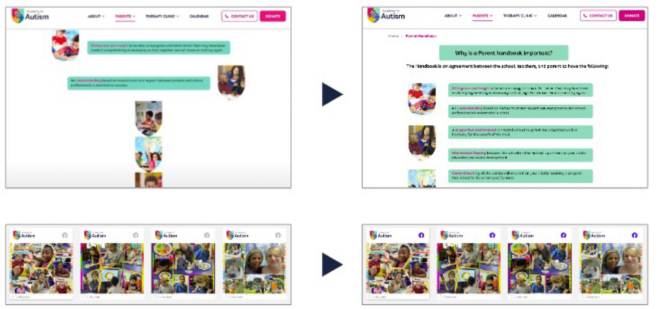
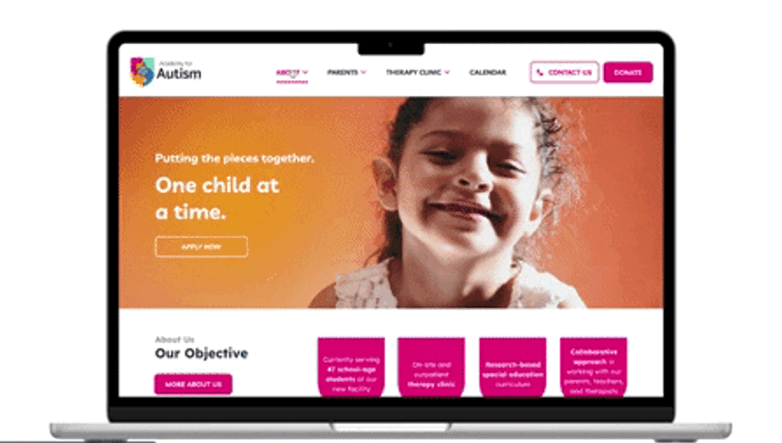

Parents are not finding all the information they need in the website which is causing them frustration which is also not responsive and not user friendly.
Provide parents and students a user friendly website with valuable information about the school and their services as well as volunteering, donating, and sponsoring opportunities.
The plan was to ask different users about what they thought was missing in school websites, what they thought would be nice to have, and how more valuable information on the home page can be applied in special education.
The users' needs and observations while using the current site were organized into an affinity diagram.
Organizing data from the affinity diagram into an empathy map helped in better understanding user motivations and emotions when visiting the existing website.
Creating a user persona was important to understand who the design was really for and to empathize with the users by describing their real-life behaviors, goals, needs, values, motivations, frustrations, and challenges.
Once a high-fidelity prototype was developed, testing was conducted to gauge how the changes affected the user experience. A testing plan was drafted that included some basic questions about the user being tested as well as a handful of tasks that they would complete using the redesigned website.
After reviewing user tests, two iterations to the prototype was made.
 The website redesign for the Academy for Autism will provide an enhanced online experience for parents, caretakers, and donors. The new design showcases the academy's values and mission with improved usability, accessibility, and aesthetics. It is exciting to see the positive impact that this redesign will have on the academy and its community, and there is a commitment to continuing the partnership in creating a more inclusive and welcoming online space for everyone.